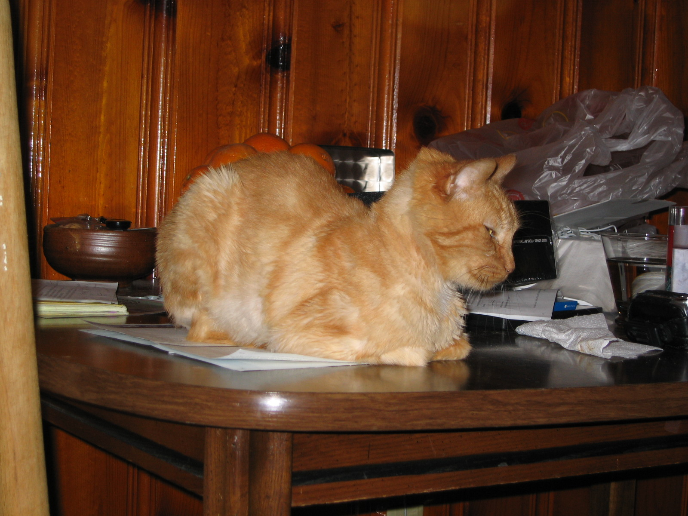
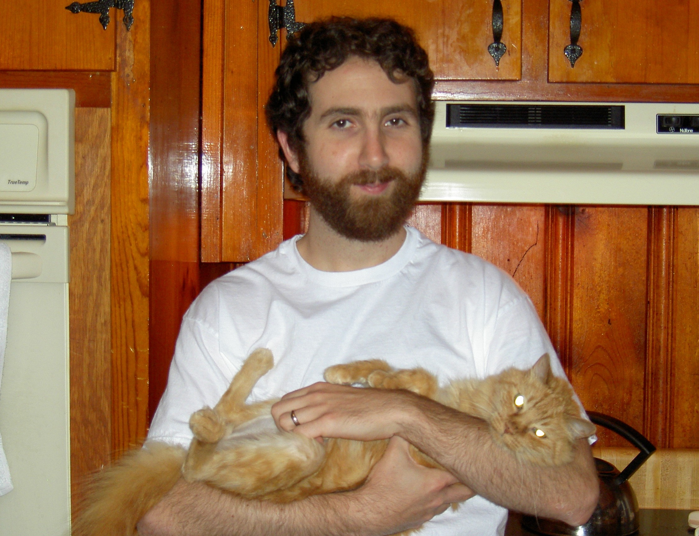
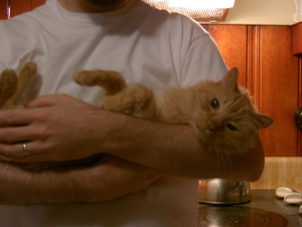
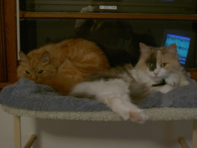

Cat-A-Log Item: Tigger
Tigger was my first cat. I didn't want him but Jenn did.
He started as an indoor/outdoor cat. He disappeared for a week. When he came back Jenn insisted he stay inside.
Tigger was with us for 9 years. He was the first cat we lost to disease.
Tigger could be affectionate. He always struck me as serious and alert. It made me wonder what his life was like before he was with us.



